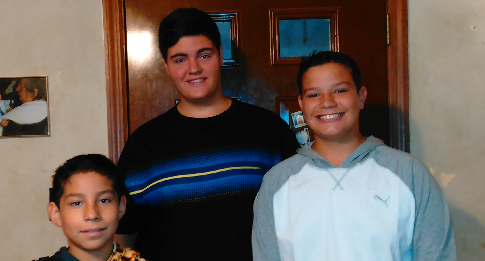
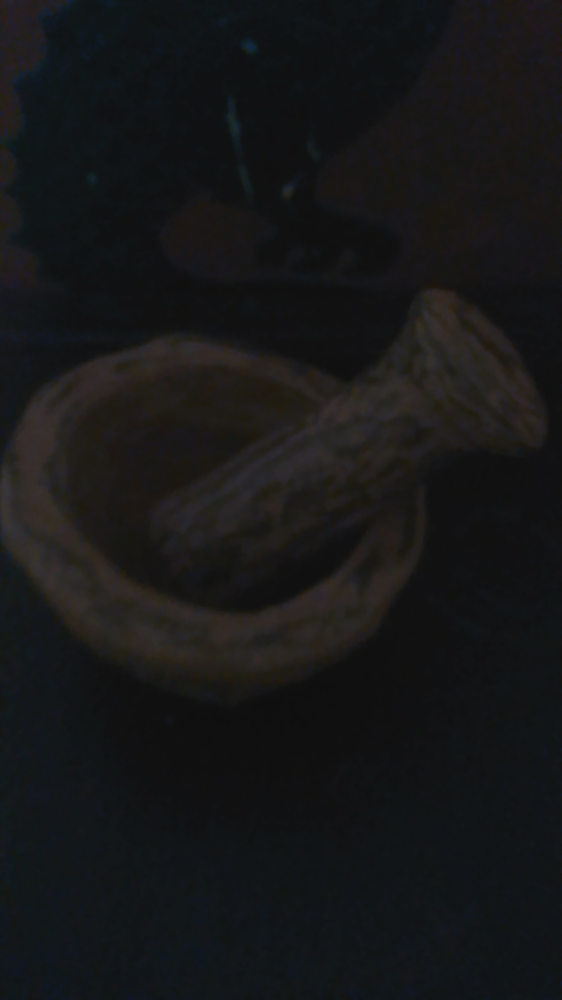
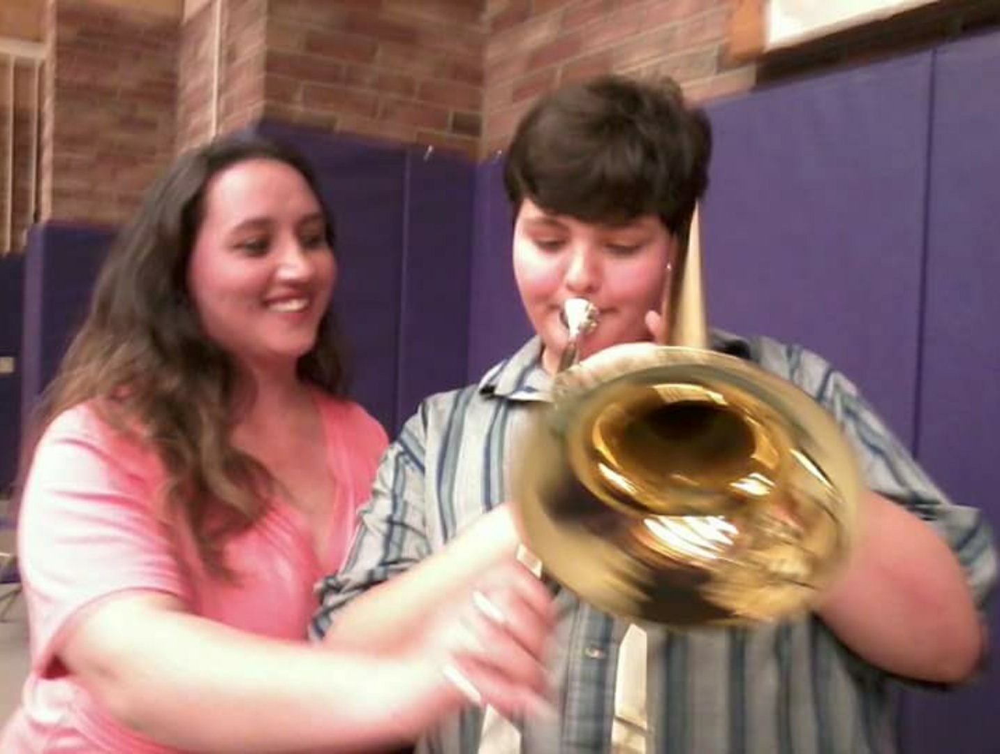

About Me
I veiw myself of being a simple person, but I strive for the future.
 Hi my name is David and I love technology wether it be computers or a stick. I plan to get into some sort of computer field wether I go for graphic design or maybe along the lines of game or application development. Now I'm in eleventh grade and I am in the third iteration of my schools programming java corse. I am also taking robotics engenering(more about building) and intend to take stem robotics (more about the program) next year.
 For some hobbys along side of software development are hands on craftmenship like this morter and pestal I made from clay I dug up at my grandparents house. Aswell as fire making exploring woodsland and alike. I also love music I started in fourth grade when we could start inour elementarty school. I chose the trombone and now I can play guitar and would like to learn to play piano.